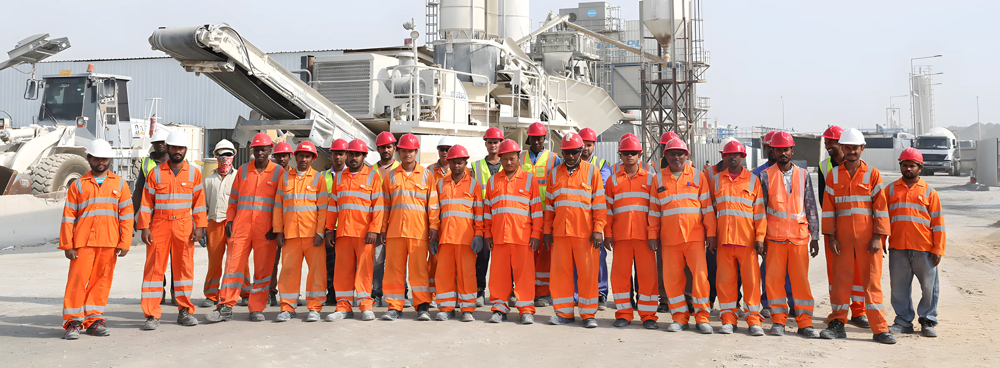

Engr. Mohamed Mostafawi
Managing Partner / General Manager
Qatar Trading and Contracting Group was founded in Doha in 1992. We are a Grade A Local Civil Contractor for roads and drainage, and our main client is the Public Works Authority, Ashghal.

Today we compete with major local and international companies for Qatar's infrastructure work. We got here one contract at a time.
Managing Partner / General Manager
Deputy General Manager
Operations Manager / Project Director
Micro-Tunnelling, Geo-Drilling and Grouting Manager
Admin Manager
Finance Manager
Human Resource Manager
More than 150 certified engineers and 20 accountants, with the site crews behind them. Figures as at the end of 2018.
| Senior management (GM, DGM, QHSE, operations, legal, department heads) | 20 |
|---|---|
| Office staff | 90 |
| Project management staff (engineers, QHSE, surveyors, labs) | 357 |
| Supervisors, foremen, operators, skilled and general workers | 2,833 |
| Total | 3,300 |
Our Integrated Management System follows ISO 9001:2015, ISO 14001:2015 and ISO 45001:2018. It covers every department and every project, and it is reviewed every year. We have also begun applying Lean Construction principles on our current projects.
In 2022 we received a certificate of achievement for one million man-hours without a lost-time incident, and thanks from the Ministry of Labour for our work on safe conditions for our workers.
By 2030, Qatar's number one civil contracting company, with at least two branches in the GCC.
Meanwhile we keep doing what got us here: contributing to Qatar's local roads and drainage, training our people, and investing in our machines and methods.